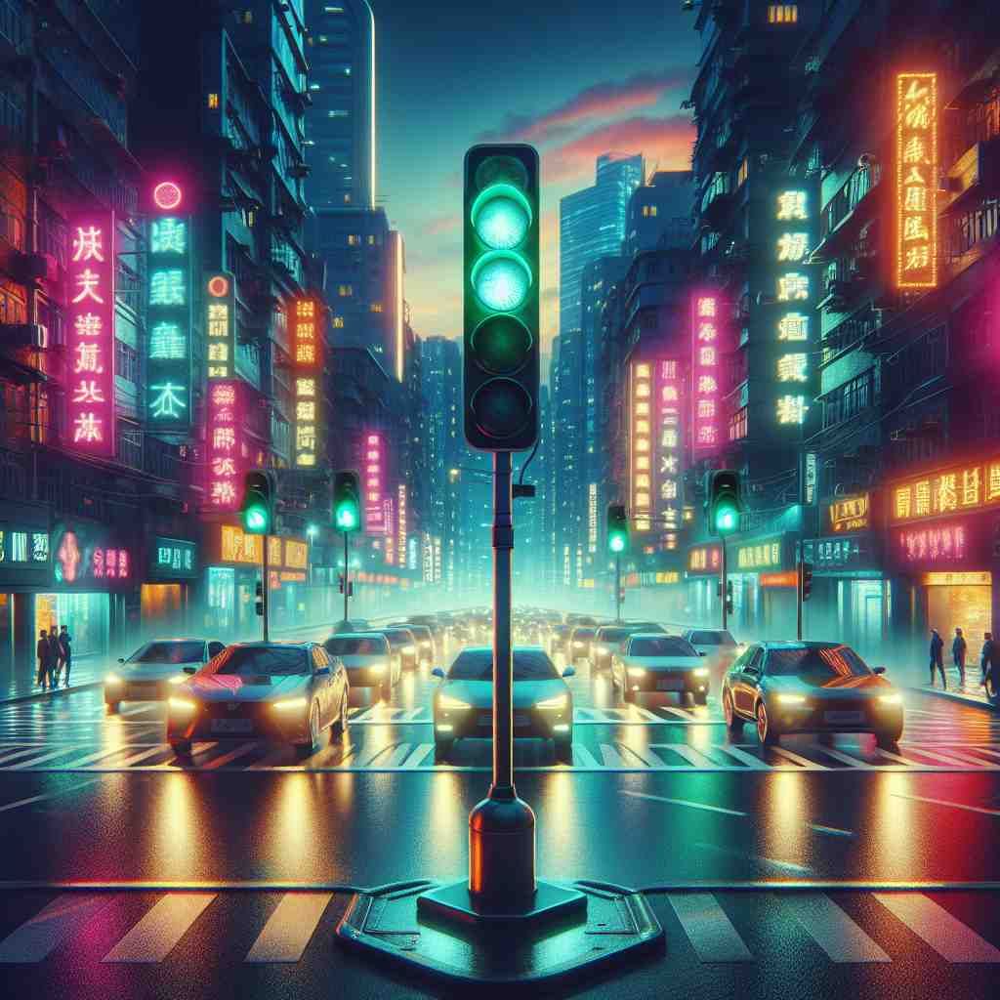
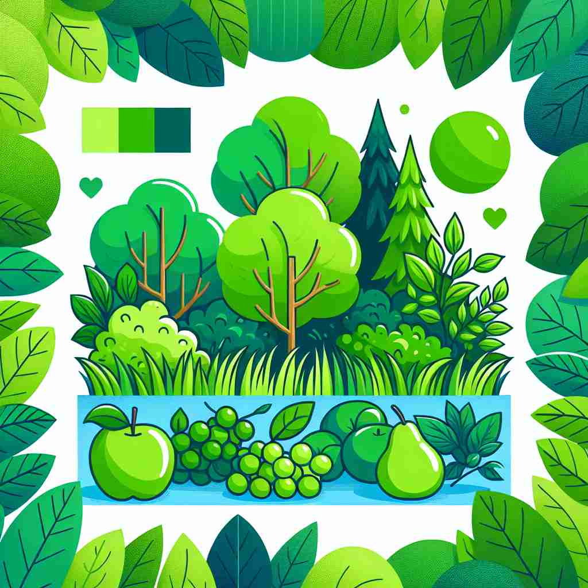

🗝️ adj. having the color of grass or leaves
🖼️ 想象一个宁静的公园，早晨的露水依然挂在绿油油的草地上，阳光透过树叶，形成斑驳的绿色阴影。这种生机勃勃的颜色正是'green'的核心含义。
🔍 通过联想绿色植物，可以轻松记住'green'的核心含义。其他含义都源于这个基本概念：未成熟的果实是绿色的，环保与自然联系紧密，新手就像未熟的果实，嫉妒使人脸色发绿，而草地自然是绿色的。这种联想方法可以帮助你更好地理解和记忆'green'的多重含义。

💬 The green trees in the forest look beautiful in the sunlight.

💬 The woman looks beautiful in her green dress at the party.

💬 The green traffic light tells cars to stop and pedestrians to cross.

💬 The park has many green trees that provide shade.
🗝️ adj. not ripe or mature
🖼️ 在一个果园里，农夫正在检查果树。他注意到一些苹果仍然是绿色的，还未成熟，提醒助手这些果子需要再等待几周才能采摘。
💬 These bananas are still too green to eat.
❓ 未成熟的水果通常呈绿色
🗝️ adj. environmentally friendly
🖼️ 在一个现代化的办公室中，员工们欢迎了一台新的绿色打印机。这台打印机耗能少，使用可再生纸张，体现了'green'作为环保的意义。
💬 We should support green energy sources like solar power.
❓ 绿色象征自然和环保
🗝️ adj. inexperienced or new
🖼️ 在一个繁忙的餐厅厨房里，新来的厨师显得有些紧张，手忙脚乱地适应各项工作。其他厨师打趣道：'别紧张，我们都曾经像你一样green。'
💬 He's still green in this job and needs more training.
❓ 类比未成熟的绿色果实
🗝️ adj. jealous or envious
🖼️ 在一个小型聚会上，一位朋友拿到了他们梦寐以求的梦想工作。另一位朋友听后，虽然脸上带着微笑，但心中却感到一阵绿色的嫉妒。
💬 She was green with envy when she saw her friend's new car.
❓ 嫉妒通常与脸色发绿联系在一起
🗝️ n. an area of grass in a town or village
🖼️ 在一个温馨的小镇中心，有一片绿地，居民们常在此野餐和放风筝，享受'green'作为社区休闲空间的功能。
💬 The children were playing on the village green.
❓ 绿色草地的延伸含义
🗝️ v. to make or become environmentally friendly
🖼️ 一家公司正致力于减少碳足迹，他们宣告未来五年要完全green化所有的生产流程，以达到可持续发展的目标。
💬 The company is trying to green its production processes.
❓ 使事物变得更环保，如同变绿